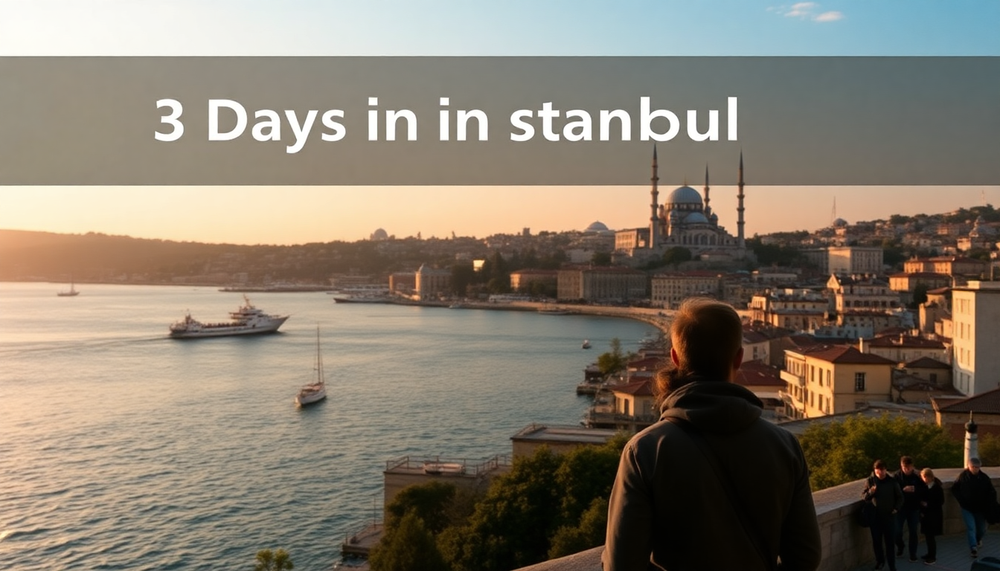

3 Days in Istanbul: A Practical Itinerary for First-Timers

I landed at Istanbul Airport on a Tuesday afternoon, jet-lagged but buzzing. Three days in a city straddling two continents felt ambitious, but by the end, I’d covered the big sights, eaten my weight in simit, and learned exactly where to skip the queue. This itinerary is what I actually did—no filler, no fluff. Just the ferry schedules, the hidden bakery, and the one museum worth the ticket price.
What’s the smartest way to split your three days in Istanbul?
Divide the city by neighborhood. I spent Day 1 in Sultanahmet (the historic peninsula), Day 2 crossing the Golden Horn to Beyoğlu and Karaköy, and Day 3 hopping the ferry to Kadıköy on the Asian side. This flow minimizes backtracking and matches each area’s vibe: old-meets-new, then local.
- Day 1: Sultanahmet (Hagia Sophia, Blue Mosque, Basilica Cistern, Grand Bazaar)
- Day 2: Beyoğlu (İstiklal Street, Galata Tower, Karaköy fish market)
- Day 3: Kadıköy (moda neighborhood, street food, ferry ride back at sunset)
Pro tip: Buy a Museum Pass Türkiye at the Hagia Sophia ticket booth if you plan on visiting three or more paid sites. It covers Topkapı Palace and the Basilica Cistern, and the line for the pass is usually shorter.
Where should I stay in Istanbul for a three-day trip?
I booked two nights at Hotel Arcadia Blue in Sultanahmet and one night at Vault Karaköy near the Galata Bridge. Arcadia Blue’s rooftop terrace has a direct view of Hagia Sophia—worth the splurge for the first morning coffee. Vault Karaköy put me steps from the ferry docks and the best bakeries.
- Budget option: Cheers Hostel in Sultanahmet—dorm beds but clean, and the common room overlooks the Blue Mosque.
- Mid-range: Hotel Amira near the Arasta Bazaar—quiet street, excellent breakfast with fresh gözleme.
- Luxury: Four Seasons Sultanahmet—you’re paying for the location inside a former prison courtyard, but the service is flawless.
Don’t stay in Taksim Square unless you want nonstop party noise. Beyoğlu is fine, but Sultanahmet or Karaköy puts you closer to the main action.
Which mosques and museums are worth the entry fee?
Hagia Sophia is free now (it’s a working mosque), but the interior feels rushed—you can’t linger upstairs. Go early, around 8 AM, before the tour groups flood in. The Blue Mosque is also free, but I found it less impressive inside because of ongoing restoration scaffolding.
Paid sites that delivered:
- Basilica Cistern (€20 with Museum Pass): The Medusa heads are cool, but the real draw is the eerie lighting and echoing water. Skip the audio guide—it’s too long.
- Topkapı Palace (€30): Give yourself two hours minimum. The harem section (€15 extra) is worth it for the tile work alone.
- Chora Church (now Kariye Mosque, free): The mosaics here are better than Hagia Sophia’s. It’s a 30-minute taxi from Sultanahmet, but do it.
Overrated: Grand Bazaar. It’s a maze of leather jackets and fake scarves. Go for the architecture, not the shopping. Buy spices and Turkish delight at Spice Bazaar instead—smaller, less aggressive vendors.
What’s the best food in Istanbul without falling for tourist traps?
I ate my way through three neighborhoods and kept notes. Here’s what actually delivered:
- Karaköy Güllüoğlu for baklava—the pistachio katmer is life-changing. Skip the chain versions in Sultanahmet.
- Çiya Sofrası in Kadıköy—specializes in regional Turkish dishes from Anatolia. Try the manti (tiny lamb dumplings) and the sour cherry kebab.
- BALIKÇI SABAHATTİN in Karaköy—a no-frills fish restaurant where locals queue at noon. The fried mussels with tarator sauce are the move.
- Simit Sarayı is everywhere and fine for a quick simit (sesame bagel), but the fresh ones from a street cart near Eminönü Pier are cheaper and better.
Avoid: Restaurants on İstiklal Street with men waving menus. They’re overpriced and the food is reheated. Walk two blocks off the main drag to Zübeyir Ocakbaşı for proper grilled meats.
How do I get around Istanbul efficiently?
The Istanbulkart is your best friend. Buy it at any metro station kiosk (50 TL card fee, then top up). It works on buses, trams, ferries, and the funicular. I loaded 200 TL on day one and had enough left for a ferry ride on day three.
- Tram T1: Runs from Kabataş to Sultanahmet and Eminönü—super convenient for Day 1.
- Ferries from Eminönü to Kadıköy: Every 15 minutes, 15 TL, and the Bosphorus views are free. Take the Şehir Hatları public ferry, not the tourist boats.
- Metro: Line M2 connects Taksim to Yenikapı, but I barely used it—trams and walking covered more ground.
Uber works in Istanbul, but drivers often cancel. Hail a yellow taxi from a stand instead, and make sure the meter is running. I had one driver try to negotiate a flat rate—politely insist on the meter.
Is the Bosphorus cruise worth it?
Yes, but skip the overpriced dinner cruises. I took the Turyol short Bosphorus tour from Eminönü (90 minutes, 150 TL). It passes the Dolmabahçe Palace, Ortaköy Mosque, and under the Bosphorus Bridge. The audio guide is cheesy, but the views of the Rumeli Fortress from the water are spectacular.
Alternative: Hop on the regular Şehir Hatları ferry to Üsküdar (30 minutes, 15 TL). You get 80% of the same views for a fraction of the price, plus you end up in a lovely neighborhood with great kumpir (stuffed baked potatoes) at Üsküdar Kumpir.
What should I pack for Istanbul in three days?
Istanbul’s weather is moody. I visited in November and got sun, rain, and wind in one afternoon. Pack layers and comfortable walking shoes—you’ll clock 10,000+ steps daily.
- Scarf or shawl: Required for mosque entry (cover hair for women, shoulders for everyone).
- Comfortable sneakers: The hills in Karaköy and the cobblestones in Sultanahmet will punish thin soles.
- Portable charger: Your phone dies fast with Google Maps and photo-taking.
- eSIM: I used Airalo before leaving—15 GB for $12, activated in five minutes. Saved me from buying a local SIM at the airport.
FAQ
Is Istanbul safe for solo travelers? Yes, I felt safe walking alone at night in Sultanahmet and Karaköy. Avoid dark alleys off İstiklal after midnight, and keep your bag zipped in crowded areas like the Grand Bazaar. Pickpocketing happens on the T1 tram—keep your phone in your front pocket.
How much cash do I need for three days? I withdrew 2,000 TL (about $60) from an ATM at the airport and it lasted three days for street food, tips, and small purchases. Most restaurants and hotels accept cards, but ferry tickets and simit carts are cash-only. Use bank ATMs (Garanti, İş Bankası) for better rates.
Can I see both Europe and Asia in one day? Easily. Take the morning ferry from Eminönü to Kadıköy (Asian side), explore the market and Moda coast, then ferry back to Karaköy (European side) for dinner. I did this on Day 3 and still had time for a Galata Tower visit before sunset.
Conclusion
- Split your days by neighborhood: Sultanahmet, Beyoğlu/Karaköy, and Kadıköy.
- Buy an Istanbulkart and use ferries for transport and views.
- Eat at Çiya Sofrası and Karaköy Güllüoğlu; skip the Grand Bazaar.
- Hagia Sophia is free but crowded—go at 8 AM.
- Pack a scarf and comfortable shoes; don’t overpack—laundry is cheap.